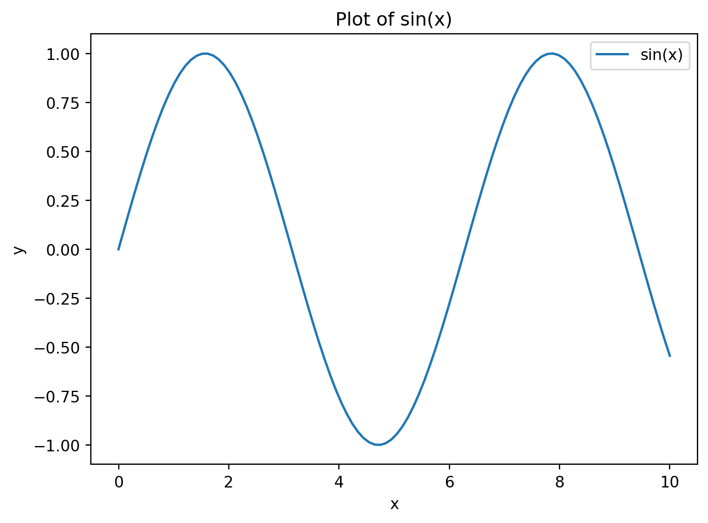
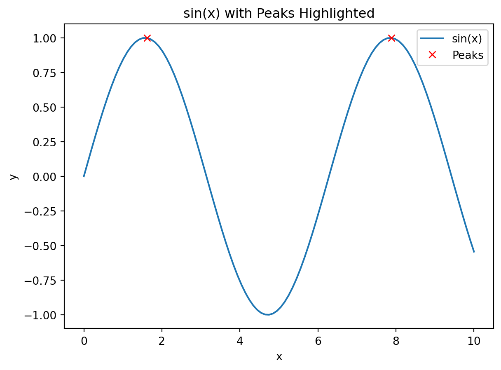

# Import common librariesimport pandas as pdimport numpy as npimport matplotlib.pyplot as plt# Create a sample DataFramedata = pd.DataFrame({"x": np.linspace(0, 10, 100),"y": np.sin(np.linspace(0, 10, 100))})# Display the first few rowsdata.head()
x
y
0
0.00000
0.000000
1
0.10101
0.100838
2
0.20202
0.200649
3
0.30303
0.298414
4
0.40404
0.393137
# Plot the dataplt.plot(data["x"], data["y"], label="sin(x)")plt.xlabel("x")plt.ylabel("y")plt.title("Plot of sin(x)")plt.legend()plt.show()

# Import plotlyimport plotly.express as px# Create an interactive plotfig = px.line(data, x="x", y="y", title="Interactive Plot of sin(x)")fig.show()
# Import scipy for signal processingfrom scipy.signal import find_peaks# Find peaks in the sine wavepeaks, _ = find_peaks(data["y"])# Plot with peaks highlightedplt.plot(data["x"], data["y"], label="sin(x)")plt.plot(data["x"].iloc[peaks], data["y"].iloc[peaks], "rx", label="Peaks")plt.xlabel("x")plt.ylabel("y")plt.title("sin(x) with Peaks Highlighted")plt.legend()

step 1. Check what environment is active library(reticulate) py_config()
step 1.5: load env for project if needed library(reticulate) use_virtualenv(“env”, required = TRUE)
step1.7: create virtual env if not needed (basically needed in any new device) library(reticulate) # I wonder if the line below can stand lsone virtualenv_create(“env”) # env is the name which can be anything, but will use env for instructions